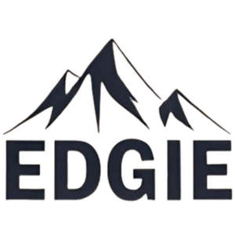

Trade Mark Journal No.2025/013 28 March 2025
UK00004167250 28 February 2025 (21,25,35)

- Class 21
- Insulated mugs; Insulated flasks; Insulated bottles [flasks]; Heat insulated containers for drinks; Cups and mugs; Vacuum mugs; Vacuum bottles [insulated flasks]; Insulated vacuum bottles; Coffee mugs; Mugs made of plastic; Thermal insulated tote bags for food or beverages; Thermally insulated flasks for household use; Thermally insulated containers for food; Insulating flasks; Thermal insulated wrap for cans to keep the contents cold or hot; Thermal insulated bags for food or beverages; Heat insulated domestic vessels of glass; Thermal insulated containers for food or beverages; Travel mugs; Heat insulated domestic vessels of earthenware; Insulated flasks for household use; Thermal insulated containers for food or beverage; Mugs made of ceramic materials; Heat insulated domestic vessels of porcelain; Insulating sleeve holders for beverage cans; Double heat insulated containers for food; Insulated containers for beverage cans, for domestic use; Insulating sleeve holder for beverage cups; Insulating jars; Mug cosies; Mug sleeves; Heat-insulated containers for beverages; Heat-insulated containers; Reusable stainless steel water bottles sold empty; Glass flasks [containers]; Glass cups; Beverage coolers [containers]; Reusable plastic water bottles sold empty; Plastic cups; Beverages (Heat insulated containers for -); Heat insulated containers.
- Class 25
- Thermally insulated clothing; Clothing; Knitwear [clothing]; Jackets [clothing]; Ready-to-wear clothing; Woolen clothing; Layettes [clothing]; Clothing layettes; Garments for protecting clothing; Linen clothing; Headbands [clothing]; Headbands for clothing; Gloves [clothing]; Gloves as clothing; Clothes; Aprons [clothing]; Maternity clothing; Kerchiefs [clothing]; Jerseys [clothing]; Shorts [clothing]; Denims [clothing]; Gabardines [clothing]; Leather clothing; Clothing of leather; Leather (Clothing of -); Silk clothing; Collars [clothing]; Parts of clothing, footwear and headgear; Knitted clothing; Windproof clothing; Hoods [clothing]; Corsets [clothing, foundation garments]; Embroidered clothing; Belts [clothing]; Belts for clothing; Rainproof clothing; Casual clothing; Waterproof clothing; Jackets being sports clothing; Jackets (Stuff -) [clothing]; Stuff jackets [clothing]; Bottoms [clothing]; Playsuits [clothing]; Clothing for leisure wear; Ready-made clothing; Trunks being clothing; Latex clothing; Woven clothing; Infant clothing; Leisure clothing; Ties [clothing]; Drawers [clothing]; Drawers as clothing; Clothing for sports; Sports clothing; Athletic clothing; Clothing for children; Muffs [clothing]; Clothing for babies; Bodies [clothing]; Clothing for infants; Tops [clothing]; Weatherproof clothing; Pockets for clothing; Water-resistant clothing; Fabric belts [clothing]; Triathlon clothing; Handwarmers [clothing]; Beach clothing; Clothing for skiing; Thermal clothing; Cowls [clothing]; Men's clothing; Fishing clothing; Mitts [clothing]; Dance clothing; Plush clothing.
- Class 35
- Retail services in relation to cups and drinking glasses; Retail services connected with the sale of clothing and clothing accessories.
George Bishop
David Edwards
Oliver Edwards